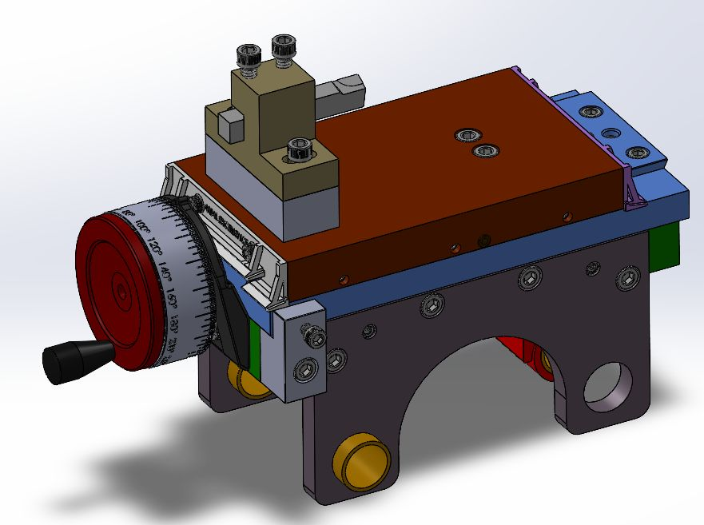

Precision motion and adjustability
The X-axis assembly combined dovetail guidance, a lead screw, gib preload, a custom indicator, anti-backlash features, way protection, and rotational adjustment. User-accessible alignment was intentionally built into the machine so manufacturing error could be corrected during setup and maintenance.
Final cross-slide CAD.